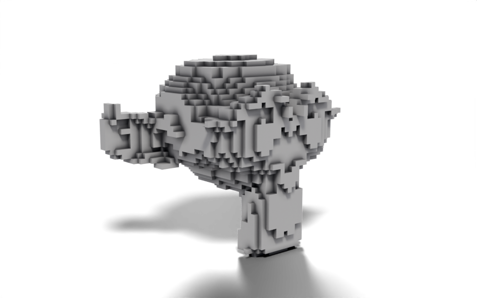

from nodebpy import geometry as g
with g.tree("Voxelize", is_modifier=True) as tree:
geometry = tree.inputs.geometry("Geometry")
size = tree.inputs.float("Voxel Size", 0.2, min_value=0.01, subtype="DISTANCE")
material = tree.inputs.material("Material")
voxel = g.Cube(size=size) >> g.SetMaterial(material=material)
(
geometry
>> g.MeshToVolume(interior_band_width=size)
>> g.DistributePointsInVolume(mode="Grid", spacing=size)
>> g.InstanceOnPoints(instance=voxel)
>> tree.outputs.geometry("Geometry")
)Voxelize
Geometry Script
volumes
instancing
Rebuild any mesh out of cubes by sampling a volume on a regular grid.

Download .blend The scene in this image: the node trees, materials, camera and lights.
The mesh is turned into a volume, the volume is sampled with points on a regular grid, and a cube is placed on each point. Because every step takes one geometry and hands one on, the whole tree is a single >> chain from the group input to the group output.
How it works
- Mesh to Volume builds a volume from the mesh.
interior_band_widthcontrols how far inwards from the surface the volume extends, so tying it to the voxel size keeps a shell one voxel thick rather than filling the whole interior. The cubes inside would never be seen. - Distribute Points in Volume in
"Grid"mode puts a point at every grid cell inside the volume.spacingis a vector socket, and the singlesizefloat is broadcast to all three axes. - Instance on Points places a cube of the same size on each point, so neighbouring cubes meet exactly.
- The cube is given the material from the
Materialinput. Geometry made inside a tree has no material of its own, so without Set Material the voxels would render with Blender’s default surface even when the object has a material.
Interface inputs are declared with tree.inputs, and the returned socket is used like any other output: size feeds three different nodes here. The Voxel Size input carries min_value and a "DISTANCE" subtype so the modifier panel shows it in scene units and refuses a size of zero.
Node tree
Original
Ported from the Voxelize tutorial in Geometry Script, which chains the same three nodes as methods on a geometry: geometry.mesh_to_volume(...).distribute_points_in_volume(...).instance_on_points(...). In nodebpy the chain is written with >> between node classes, which keeps the node names exactly as they appear in Blender’s Add menu.